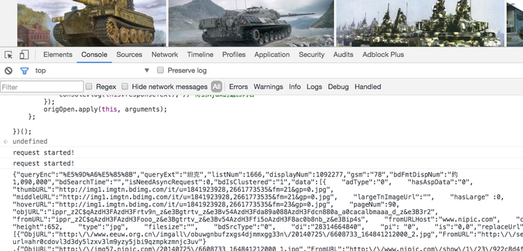
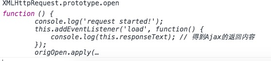

Chrome插件hook Ajax
如何Hook Ajax请求
现在很多网站都使用Ajax作为数据接口，这样其实也方便爬虫爬取数据，但是，如果站点对IP，访问频率做
了限制，或者网站定位就是搜索类，无法遍历完所有页面，或者是数据实时变化，无法预期的。这样就可能需要
直接在浏览器中模拟人的行为，对于这样的网站(使用Ajax作数据接口，有一定防范措施)
，如果我们可以通过hook得到Ajax请求，就可以搞定它的数据了。
0x00 单页面Web应用
对于单页面的Web应用，在console中使用如下代码，就能在浏览器进行Ajax请求时候，得到返回内容，
然后在post给存储接口就好了:
|
|
比如百度图片:

我们可以看到请求图片的路径，这段代码 直接使用了一个匿名函数，重写了Ajax请求的open方法，给load事件加上一个事件监听器，从而把内容得到:

对于单页面的Web应用，基本可以满足需求，但是如果翻页的话，每次翻页上一页的代码就失效了，
不可能每页都把这段代码复制进console中，还是需要使用类似Chrome插件的方式才能实现。
0x01 翻页Web应用
有了上面的代码，如果我们把它直接丢到Chrome插件的JS文件里面(官方叫Content Scripts)，发现是无法执行的，XMLHttpRequest.prototype.open 还是浏览器自身的代码。
这样看来，就无法实现自动翻页，自动获取ajax请求内容了。
Chrome官方说法如下:
|
|
大意如下：
Content scripts在一个叫做隔离区的特殊环境中执行，它可以读取宿主页面的DOM对象，但是无法改变宿主页面的JavaScript变量(包括函数)。看起来就像是每份Content scripts代码和页面其他JavaScript代码是隔开的一样。反过来也一样，宿主页面也无法改变Content scripts所定义的变量。
但是，StackOverflow上的大神rogerdpack，给出了破解之道：
既然隔离区存在，我们需要把想要的函数注入到宿主页面 （ I strongly recommend to inject all of your JS code in the page via adding a script tag），简单地说，就是通过script标签注入代码，让它成为宿主的一部分，就可以为所欲为了。
大神给出了几种方法，这里使用第一种，也是最简单的方法:
注入另外一个JS文件，让想要执行的函数成为宿主页面的一部分
script.js 文件，内容如下：
通过script注入script.js代码…
这里不能把s.onload 这两行加上(和原贴不同)，加上可能导致ajax请求无法执行(至少我测试的网站是这样的)，然后manifest.json文件如下:
|
|
需要加上”web_accessible_resources” : [“script.js”]这一行，script.js文件和manifest.json同一级目录即可。这样基本就完成了ajax hook的插件了，剩下就是把数据入库。
其他方法就没有研究了，有人建议把大神的回答加入官方文档，看来确实有必要!!!
这样的插件可以绕过登录，Cookie认证等一系列问题，只要写个简单的代码段定义好自动执行的逻辑。
参考:
http://stackoverflow.com/questions/9515704/building-a-chrome-extension-inject-code-in-a-page-using-a-content-script/9517879#9517879
http://stackoverflow.com/questions/10527625/google-chrome-extension-script-injections/10529675#10529675
http://stackoverflow.com/questions/5202296/add-a-hook-to-all-ajax-requests-on-a-page